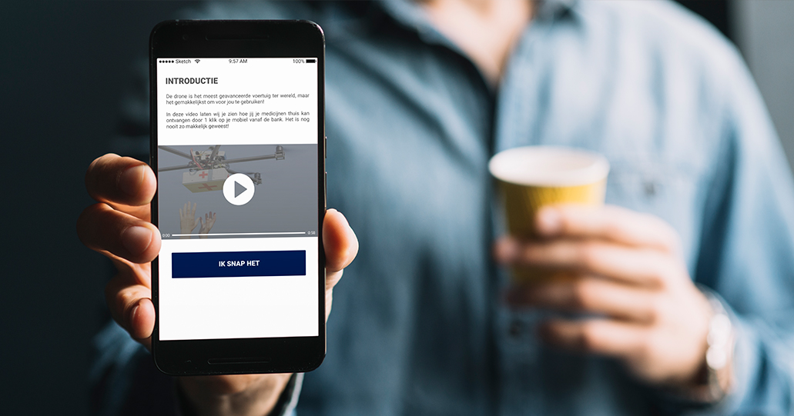
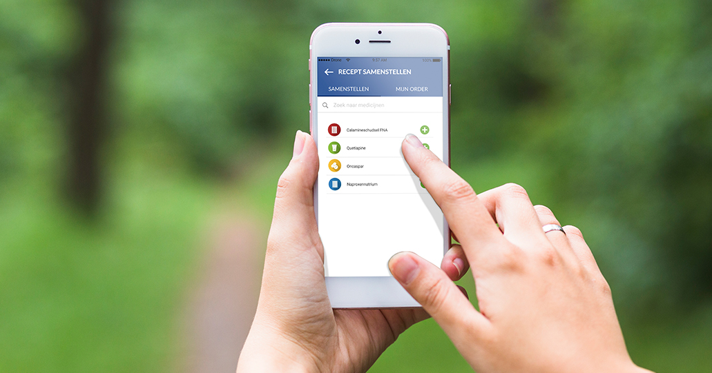

Last Mile Drone Delivery
Wunderpeople
Wunderpeople is samen met The Future Mobility Network bezig met een onderzoek naar de mogelijk- en onmogelijkheden van drone bezorging in de stad.
DoelstellingTijdens dit project werkten wij met deze echte opdrachtgevers met als doelstelling erachter te komen wat de meest gebruiksvriendelijke manier is om drone bezorging te laten werken, gericht op de customer journey en de interactie tussen mens en systeem.
OnderzoekOm dit te bereiken hebben wij eerst onderzoek gedaan bij de doelgroep en concurrenten d.m.v. interviews, deskresearch en benchmarks met de volgende onderzoeksvraag in ons achterhoofd: "Met welke aspecten betreffende de organisatie, doelgroep en concurrenten moet er rekening worden gehouden bij levering van medicatie door middel van drones?"
Uit de doelgroepanalyse blijkt dat gebruikers behoefte hebben om een voorkeurstijd op te geven. Overige wensen van de gebruikers zijn: een track & trace systeem met pushberichten, een functie dat de gebruikers oude medicijnen snel opnieuw laat bestellen, een simpele uitleg over het bestelproces en een persoonlijke code voor inlogfuncties.
Uit de concurrentieanalyse is gebleken dat er rekening gehouden moet worden met het aanbieden van de juiste interactie door middel van een track & trace systeem, een timer, een communicatiemiddel en keuzemogelijkheden voor de gebruiker.
Aan de hand van deze resultaten hebben wij een conceptmatrix gemaakt en hebben de opdrachtgevers laten kiezen. Met dit definitieve concept zijn wij aan de slag gegaan d.m.v. design principles, systeemeisen, wireframes, styleguides, storyboards en customer journey maps voor het ontwerprapport. Ook is er een flowchart, sitemap en een navigatie ontwerp gemaakt van de app.
Onderstaand vind je een aantal foto's over dit project.
Vereist resultaat
Applicatie, onderzoeksrapport, ontwerprapport
Behaald cijfer
7.8
- 
- 